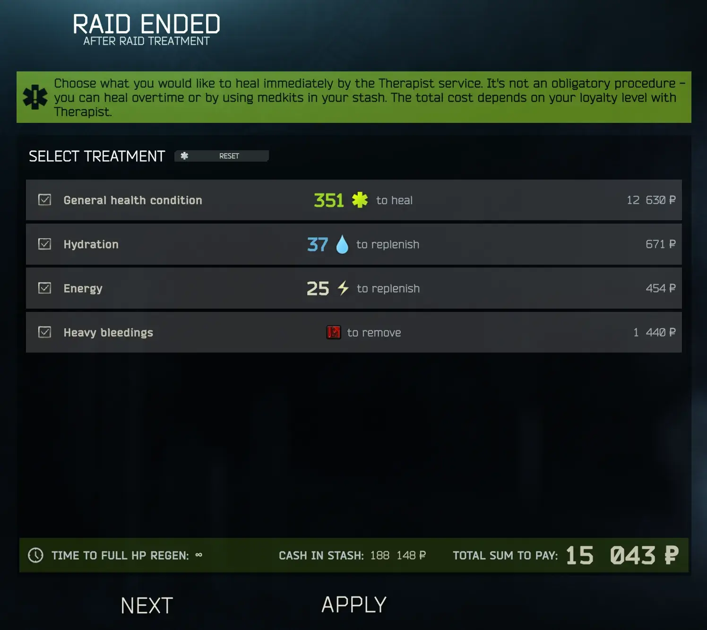

Post-Raid Healing Tweaks
- Downloads
- 1,479
- Favourites
- 9
- Mod lists
- 28
What is this?
This is a small mod that adds back an unused mechanic that allows you to refill energy / hydration in the post-raid health screen.

Huge thank you to HiddenCirno, I wouldn’t have figured this out without their help!
Installation
- Download the latest release
- Drag and drop the “SPT” and “BepInEx” folders into your SPT root directory
(NOTE: For 3.11.x users, one folder will be named “user” instead of “SPT,” but the process is the same.)

I want to change the prices!
The cost of health/energy/hydration points can be configured via a JSON file located within the server mod directory (SPT/user/mods/TKMaida-PostRaidResources/config.json).
By default, the values of each point are as follows:
-Health: 30
-Energy: 15
-Hydration: 15
Compatibility
This mod may conflict with other mods that modify therapist’s post-raid heal prices, such as Server Value Modifier, or Realism mod. Nothing major, you can run all of these mods (I do in my install) but it’s possible that SVM or Realism could overwrite the healing prices set by this mod, and vice versa (depending on load order).
Version
2.0.0
Release 2.0.0 for SPT 4.0.x
Version
1.0.0
Initial release 1.0.0 for SPT 3.11.x